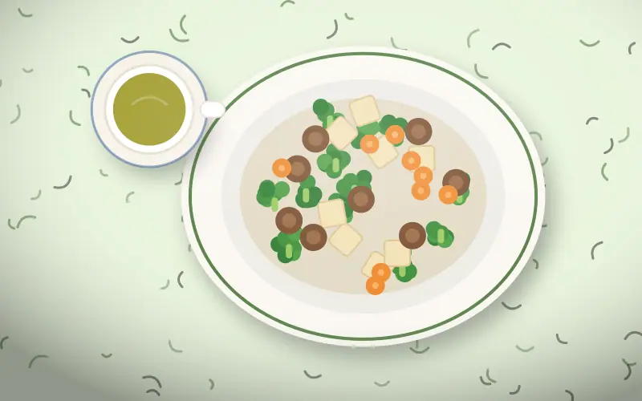
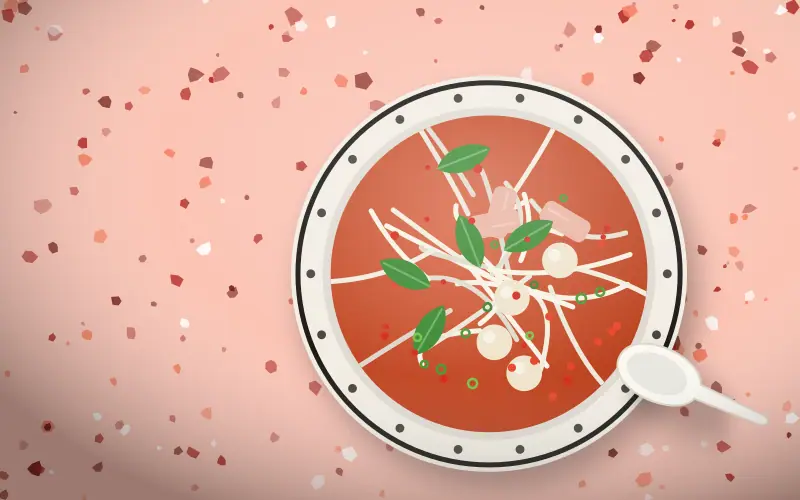
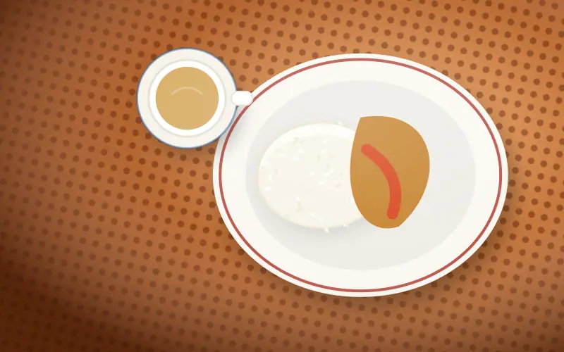

Cheap eats in Wong Tai Sin 黃大仙區
7 places, from $34. Tap one for prices, hours and the nearest MTR.

Chi Lin Vegetarian (Long Men Lou)志蓮素齋（龍門樓） · Diamond Hill$98 Ngau Chi Wan Market Cooked Food Centre牛池灣街市熟食中心 · Ngau Chi Wan~$45
Ngau Chi Wan Market Cooked Food Centre牛池灣街市熟食中心 · Ngau Chi Wan~$45
Tam Jai Yunnan Mixian (Lok Fu)譚仔雲南米線（樂富） · Lok Fu$56 Tai Hing (San Po Kong)太興（新蒲崗） · San Po Kong$56
Tai Hing (San Po Kong)太興（新蒲崗） · San Po Kong$56 
Café de Coral (Wong Tai Sin)大家樂（黃大仙） · Wong Tai Sin$34 Fairwood (Wong Tai Sin)大快活（黃大仙） · Wong Tai Sin$58
Fairwood (Wong Tai Sin)大快活（黃大仙） · Wong Tai Sin$58  Maxim's MX (Diamond Hill)美心MX（鑽石山） · Diamond Hill$40
Maxim's MX (Diamond Hill)美心MX（鑽石山） · Diamond Hill$40